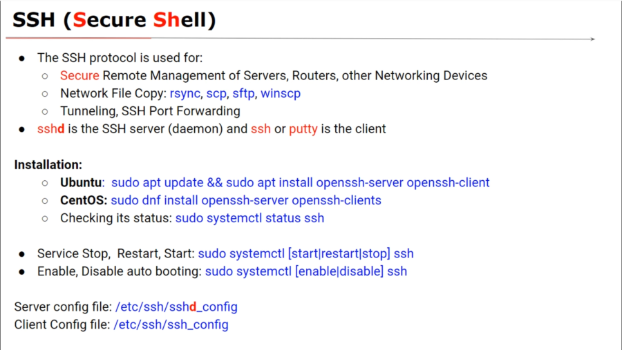
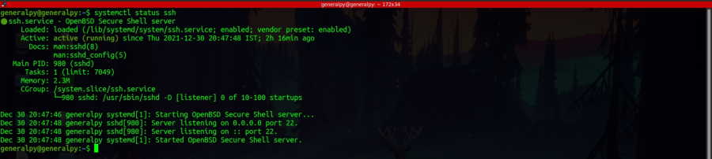
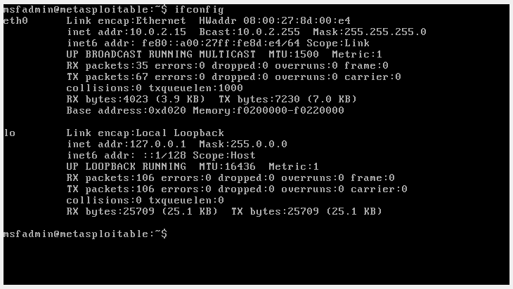
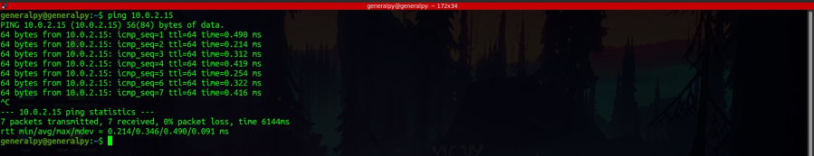
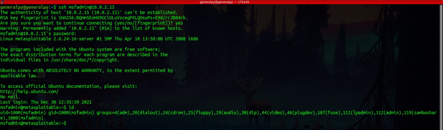
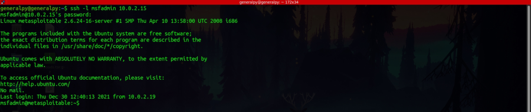

ssh stands for secure shell. It is a program that is used to remotely conenct to system which can help us to use and configure that system.

We can check status of ssh by using systemctl status ssh on ubuntu.

The ssh requires a ssh server in this case we are using openssh which is a widely used ssh server and openssh client which is also very widely used.
Our server in this case is metasploitable machine and client is ubuntu.
We will first verify that we can ping our server.


Then we will use ssh command, which will invoke our openssh client.
ssh username@ip/domain_of_server
Note that username here must exist in the server machine not on client machine.

When we connect to a system for first time via ssh, the machine generates a ssh RSA key fingerprint which is a cryptographic key which is required to communicate each time we ssh into the server. The prompt here is to add the RSA key into our local config so that it is known as an identified host. Then we are prompted for password. To exit, type exit or press ctrl+d
We can specify username with -l flag instead of using @ before host name.
ssh -l username host_address
Sometimes ssh is configured to use a port other than 22. We can used -p option so specify our own port number.
Different ssh configs are stored in /etc/ssh/ssh_config from where we can change settings like default port number.
putty is a windows based windows client.